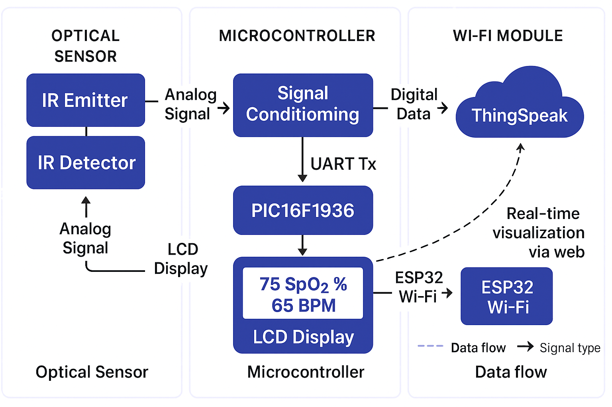

Welcome! This is a technical academic project for SpO₂ and heart rate monitoring...
¡Bienvenido! Este es un proyecto académico técnico para monitoreo de SpO₂ y frecuencia cardíaca...
Willkommen! Dies ist ein technisches akademisches Projekt zur Überwachung von SpO₂ und Herzfrequenz...
Overview
This section covers the project's goal, academic context, and general description...

Hardware
Hardware details include IR sensors, signal conditioning, and PCB design...
Firmware
This section explains how the firmware configures ADC and acquires data...
Software
The software logic for ESP32 transmission using USART and WiFi is described...